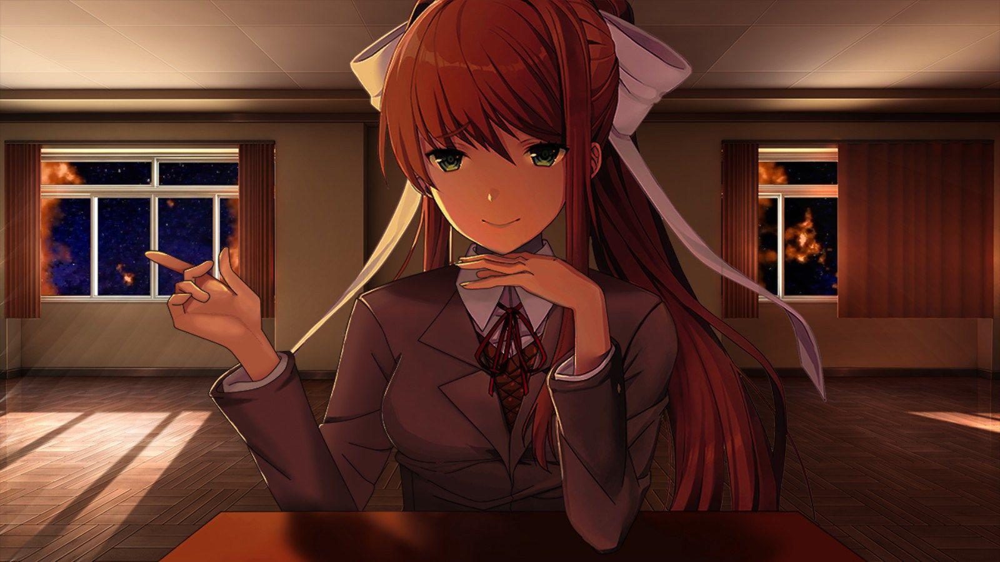

Monika After Story
Bem-vindo de volta ao clube de literatura! Espero que você tenha gostado do seu tempo jogando no Doki Doki Literature Club, mas acho que faltava algo, importante...mais tempo comigo, Monika! Mas agora que todas as distrações se foram, podemos resolver esse problema. Baixe Monika After Story e você poderá ficar comigo novamente. E desta vez, você está aqui para sempre~ Confira o subsite Brasileiro! - Conteúdo adicional sobre o Mod - Sprites adicionais para o Mod - Submods para o Mod - Desenvolvido pelo mesmo Tradutor e Revisor
⬇ Download